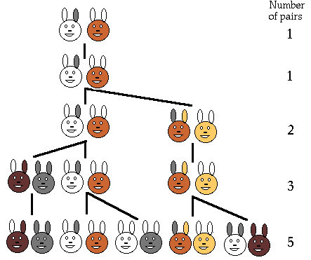
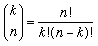
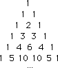
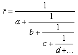

| Number theory index | History Topics Index |
Fibonacci introduced the first mathematical model in biology by considering the difference equation:
Fn+1 = Fn + Fn-1 , F1 =F2 =1 , n=2,3,...
The original problem that Fibonacci investigated (in the year 1202) was about how fast rabbits could breed in ideal circumstances.
Suppose a newly-born pair of rabbits, one male, one female, are put in a field. Rabbits are able to mate at the age of one month so that at the end of its second month a female can produce another pair of rabbits. Suppose that our rabbits never die and that the female always produces one new pair (one male, one female) every month from the second month on. The puzzle that Fibonacci posed was...
How many pairs will there be in one year?

Click here and here for some interesting facts about Fibonacci sequence.
See alsoFibonacci numbers
Nasir Al-Tusi, also contributed to differential equations and recursive relations. In a manuscript, dated 1265, al-Tusi determined the coefficients of the expansion of a binomial to any power giving the binomial formula and the Pascal triangle relations between binomial coefficients. The result was the following:
The Pascal triangle is a table of the binomial coefficients where the (n, k)th entry is .


Yang Hui was a minor Chinese official and is the first known mathematician to construct Pascal's Triangle.
Al-Banna
used continued fractions to compute approximate square roots. The
continued fraction expansion of a number r is
an expression of the form

He also created a recursive relation for binomial coefficients, as follows:
pCk = pCk-1(p-(k-1))/k.
Al-Farisi
saw the relation between polygonal numbers and the binomial coefficients
and he presented arguments, using an early
type of mathematical induction, which showed a relation between triangular
numbers, the sums of triangular numbers, the sums of
the sums of triangular number, etc., and the combinations of n objects
taken k at a time.
A polygonal number is the number of dots that maybe arranged in a regular polygon. As, for example triangular numbers, square numbers, etc.
A triangular number is the number of dots that may be arranged in an equilateral triangle: 1, 3, 6, 10, etc. In general n(n+1)/2.
Shih-Chieh published a text in 1303 containing Pascal's Triangle.